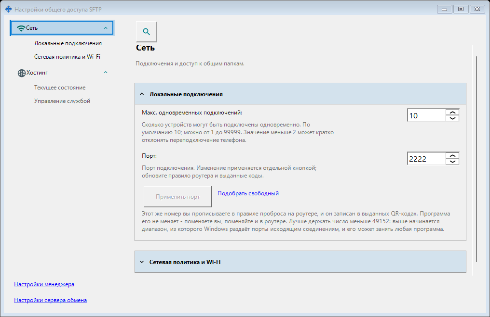
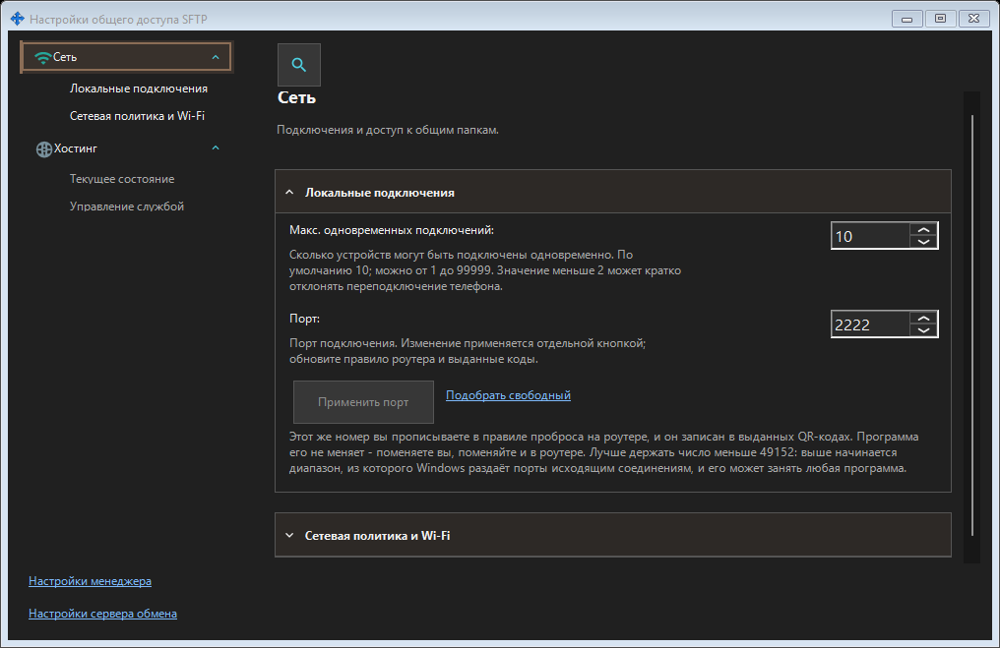

Настройки общего доступа SFTP
Назначение
Здесь находятся порт SFTP, ограничение подключений, режим только локальной сети и работа в сеансе пользователя или службой Windows. Они относятся к общему доступу к папкам и не меняют порт сервера обмена или удалённую учётную запись.


Порядок действий
Откройте настройки общего доступа SFTP из трея или по ссылке в настройках менеджера. Выключенные функции включаются только явным подтверждением с запросом прав администратора. Открытие окна ничего не включает и не запускает. Введите порт и нажмите кнопку применения; переход в другое окно сохраняет черновик. При закрытии Да применяет порт, Нет отбрасывает черновик, Отмена продолжает редактирование. При ошибке черновик остаётся. После смены рабочего порта обновите выданные коды и проброс на роутере.
Элементы окна
Настройки общего доступа SFTP
Здесь находятся порт SFTP, ограничение подключений, режим только локальной сети и работа в сеансе пользователя или службой Windows. Они относятся к общему доступу к папкам и не меняют порт сервера обмена или удалённую учётную запись. Откройте настройки общего доступа SFTP из трея или по ссылке в настройках менеджера. Выключенные функции включаются только явным подтверждением с запросом прав администратора. Открытие окна ничего не включает и не запускает. Введите порт и нажмите кнопку применения; переход в другое окно сохраняет черновик. При закрытии Да применяет порт, Нет отбрасывает черновик, Отмена продолжает редактирование. При ошибке черновик остаётся. После смены рабочего порта обновите выданные коды и проброс на роутере.
Настройки общего доступа SFTP
Здесь находятся порт SFTP, ограничение подключений, режим только локальной сети и работа в сеансе пользователя или службой Windows. Они относятся к общему доступу к папкам и не меняют порт сервера обмена или удалённую учётную запись. Откройте настройки общего доступа SFTP из трея или по ссылке в настройках менеджера. Выключенные функции включаются только явным подтверждением с запросом прав администратора. Открытие окна ничего не включает и не запускает. Введите порт и нажмите кнопку применения; переход в другое окно сохраняет черновик. При закрытии Да применяет порт, Нет отбрасывает черновик, Отмена продолжает редактирование. При ошибке черновик остаётся. После смены рабочего порта обновите выданные коды и проброс на роутере.
Настройки менеджера · Настройки общего доступа SFTP · Настройки сервера обмена